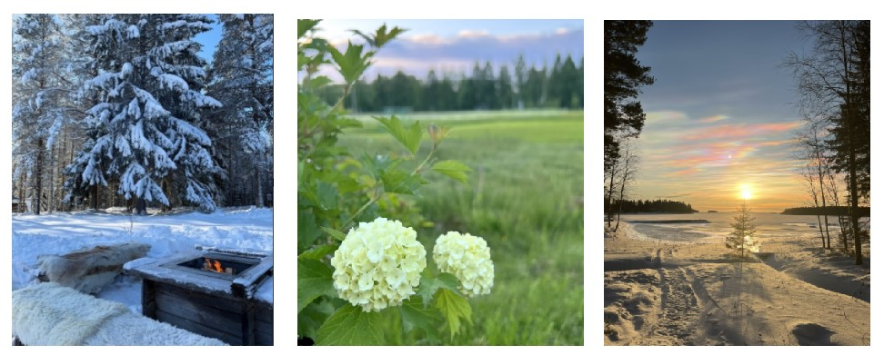

I Kallax finns det många olika aktiviteter att göra, särskilt om man gillar naturupplevelser, friluftsliv, skärgård och fiske. Man kan också delta i olika byaaktiviteter. Nedan finns exempel på aktiviteter i Kallax.

• Bada i havet på kvällen, och solen går aldrig ner
• Besöka Kallax gårdsbutik
• Vandra/Cykla vid havsstigarna på kvällen
• Åka ut med båten från Kallax hamnen
• Åka bil/skoter på isen
• Kolla på norrsken
• Köra pulka/madrass i backarna
• Kallbada i isvak
• Pimpla på isen